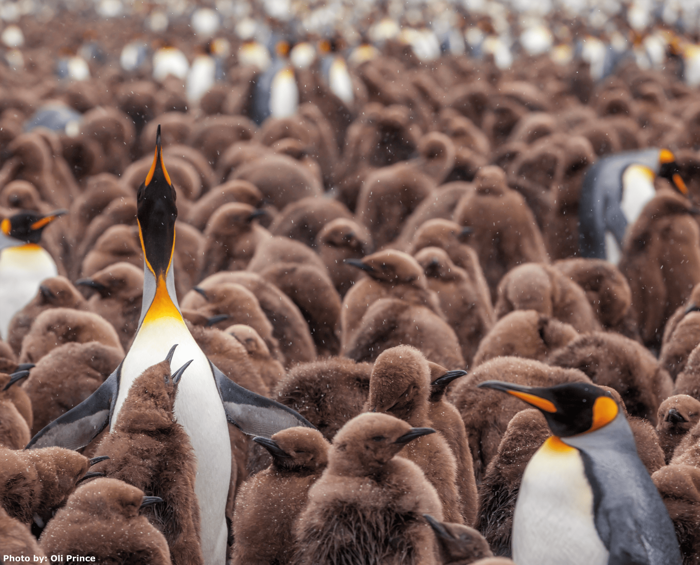

This toolkit was produced by the BirdLife International Marine Programme of BirdLife International, with support from:
British Trust for Ornithology
Royal Society for the Protection of Birds
Cambridge University Conservation Evidence
Key Biodiversity Area Secretariat
Conservation International
The toolkit builds upon the Marine IBA Toolkit (BirdLife International (2010)).
Key organisations who supported the development of the current toolkit include:
Association BIOM, Croatia
BirdLife Malta, Malta
Hellenic Ornithological Society, Greece
BirdLife South Africa, South Africa
Bombay Natural History Society, India
Previous supporting organisations include:
Portuguese Society for the Study of Birds (SPEA)
SEO/BirdLife
Ligue pour la Protection des Oiseaux (LPO)
The development of this toolkit was made possible by Cambridge Conservation Initiative Collaborative Fund, with key support from:
Arcadia - a charitable fund of Lisbet Rausing and Peter Baldwin,
A.G. Leventis Foundation
Additional support to project partners was provided by:
Life Artina
Life Pan Puffinus